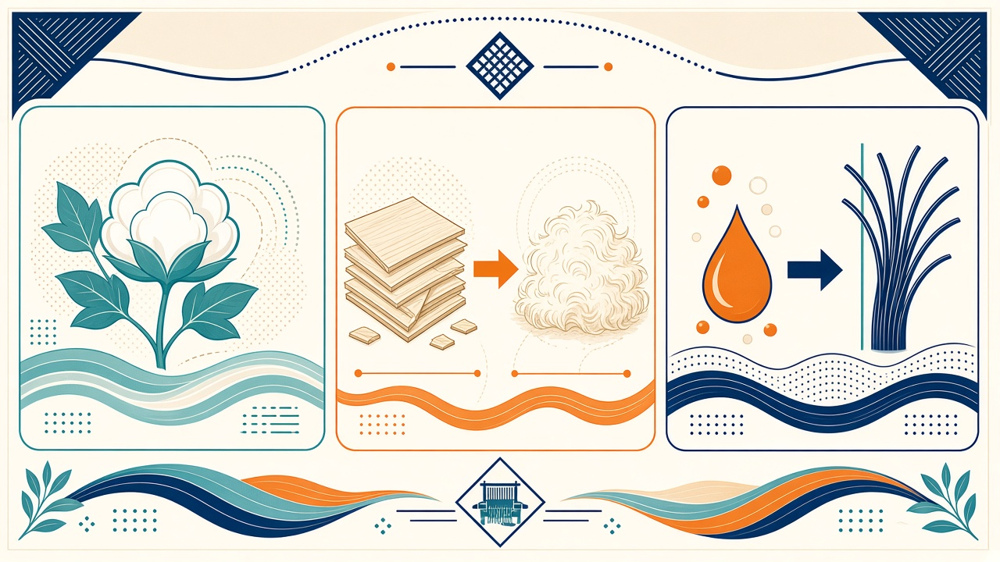
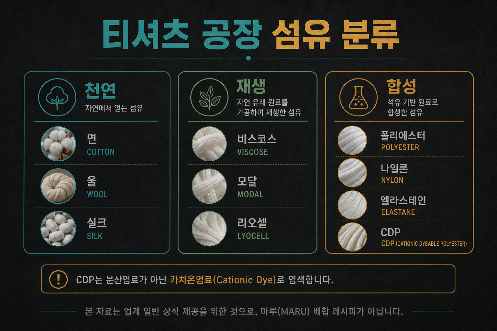
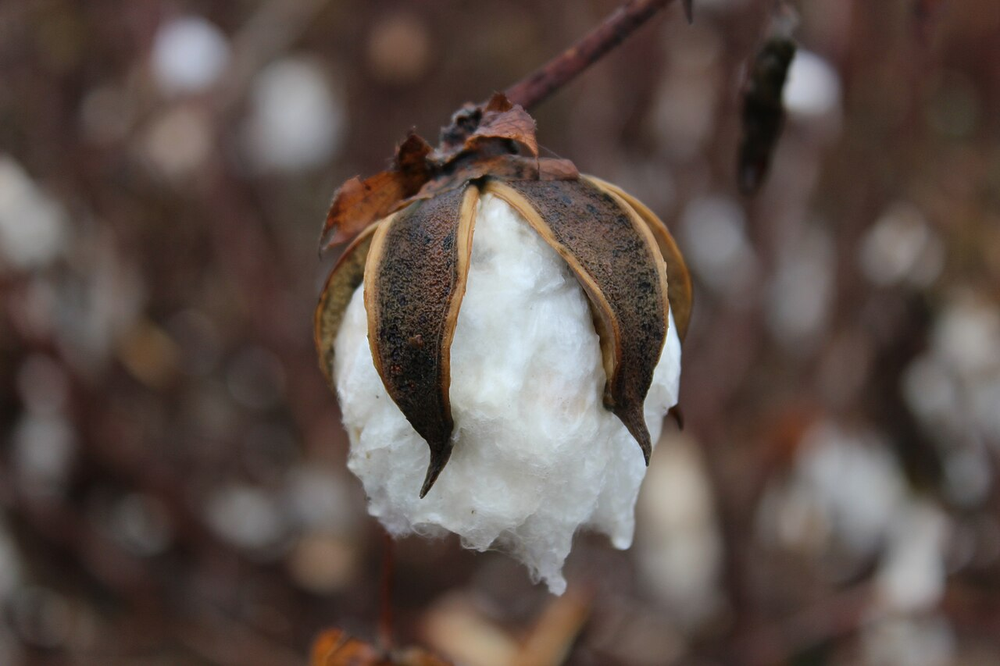
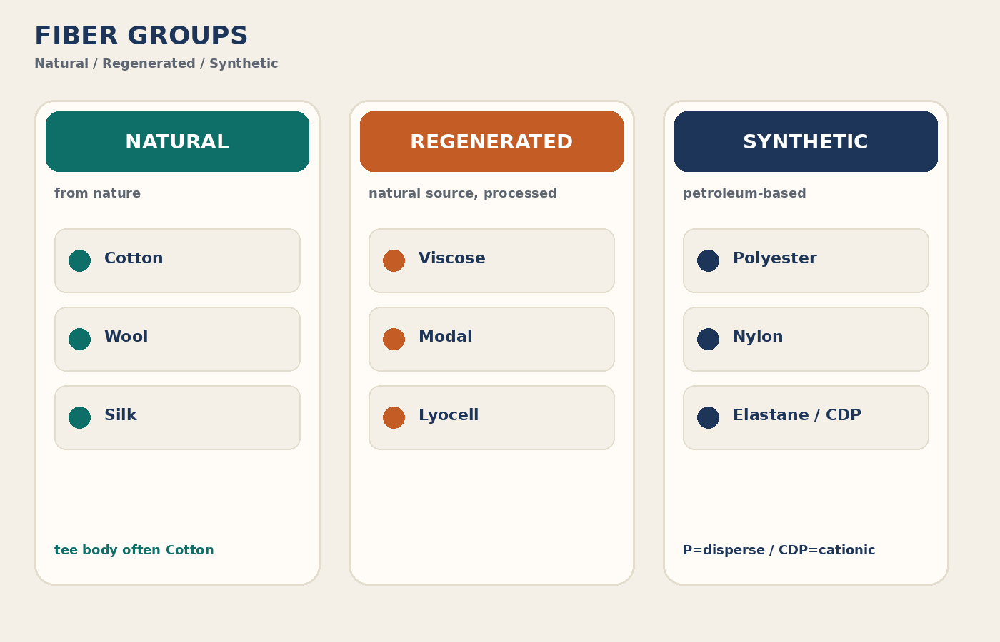

교육자료 · 섬유
옷 재료가 무엇인지. 쉬운 말로 세 그룹: 천연(자연에서), 재생(자연 원료 가공), 합성(석유 기반). 티에 자주 나오는 이름만.




먼저 쉬운 말 세 그룹. 배합 비율·레시피는 작지.
1. 천연 (Natural) — 자연에서 얻는 섬유
쉬운 말: 식물에서 오는 재료. 티 본체에 가장 많음.
이름: cotton · 현장: 코튼·면
동물 모. 니트 티보다 스웨터·아우터. 티 본체에서는 드물.
견. 고급·트림. 티셔츠 본체 기본 라인에서는 드물.
2. 재생 (Regenerated) — 자연 원료를 가공해 재생
셀룰로오스 재생. 드레이프·흡수. 블렌드·싱글 원단에도.
비스코스 계 개량. 소프트·수축 안정 쪽 공개 설명 많음.
용매 재생 셀룰로오스. 텐셀(TENCEL™)은 상표. 리오셀·모달 제품에 붙는 경우가 많다. 일반명은 각각 리오셀·모달.
3. 합성 (Synthetic) — 석유 기반 합성
레귤러 PET. 강도·속건. 블렌드(C/P)·헤더에 흔함. 염료: 디스퍼스.
폴아마이드. 강도·마모. 티 본체보다 트림·특수 원단. 염료: 산성.
스팬덱스. 스판. 플레이팅·블렌드로 신축성. 현장: 스판·스팬.
Cationic Dyeable Polyester. 레귤러 PET와 다른 염료(카티온). 헤더·특수 원단 예.
작지·원단명에 자주 나오는 표기. 비율은 작지.
Combed cotton. 코밍(컴빙)한 면. 단순사보다 잔머리·균일. 현장: 코마·CM.
Cotton/Polyester 블렌드. 비율은 작지마다 다르다.
편직 시 스판(엘라스테인)을 플레이팅. 신축성. 편직 칸 참조.
CDP 계 폴리를 헤더·리브 등에. 카티온 염료. 레귤러 P와 섞어 쓰지 말 것.
섬유→염료 짧은 표. 세부는 염색 칸.
| 섬유 | 염료(교육말) | 메모 |
|---|---|---|
| 면 (cotton) | 리액티브 reactive | 셀룰로오스 계 |
| P / 레귤러 PET | 디스퍼스 disperse | 합성 폴리 |
| CDP | 카티온 cationic | 가염 폴리 — 디스퍼스 아님 |
| 나일론 | 산성 acid | 폴아마이드 |
CDP≠레귤러 PET. 염료를 바꾸면 색이 안 옮겨지거나 견뢰도가 무너짐.
쉬운 말 먼저. 작지에는 현장말, 바이어·교재에는 교육말이 같이 나온다.
| 현장말 | 교육말 | 메모 | 어디 |
|---|---|---|---|
| 면·코튼 | cotton | 천연 | 원단명 |
| 코마·CM | combed cotton | 빗질 면 | 작지 |
| P·폴리·PET | polyester | 레귤러 | 원단명 |
| 카티온P·CDP | cationic dyeable polyester | 염료 다름 | 헤더·특수 |
| 스판·스팬덱스 | elastane / spandex | 신축 | 플레이팅 |
| C/P·씨피 | cotton/poly blend | 비율=작지 | 원단명 |
| 비스·레이온 | viscose | 재생 | 원단명 |
| 텐셀 | lyocell / modal (brand: TENCEL™) | 상표. 리오셀·모달 | 스펙 |
| 디아·분산 | disperse | P용 | 염색 |
| 카치온·카티온 | cationic | CDP용 | 염색 |
교육용 영상은 이 페이지에 아직 없다.
이 페이지 숫자로 공장 규격을 정하지 않는다. 작지·바이어 스펙을 본다.
면은 식물 천연 섬유.
자연 원료를 가공해 재생한 섬유.
레귤러 PET → 디스퍼스. CDP만 카티온.
CDP = Cationic Dyeable Polyester → 카티온.
CM = combed / 코마면.
Cotton/Polyester. 비율은 작지마다 다르다.
편직에서 스판을 플레이팅해 신축성.
나일론(폴아마이드) → 산성 염료.
TENCEL™은 상표. 리오셀·모달 쪽에 붙는 경우가 많다.
업계 일반 분류이다. 배합·비율은 작지.